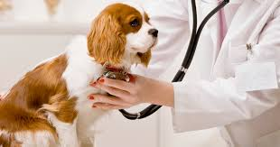
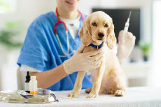
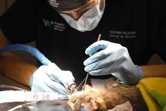
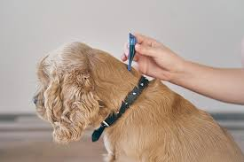
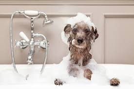
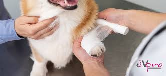

Servicios Veterinarios
- Consulta General: Diagnóstico y revisión médica completa.
- Vacunación: Aplicación de vacunas esenciales.
- Cirugías: Procedimientos quirúrgicos con equipos de última tecnología.
- Desparasitación: Prevención y tratamiento de parásitos.
- Estética y Baño: Corte de pelo, baño y limpieza especializada.
- Urgencias 24/7: Atención inmediata para emergencias.
Galería de Servicios
Consulta Veterinaria

Vacunación

Cirugía

Desparasitación

Estética y Baño

Urgencias 24/7
